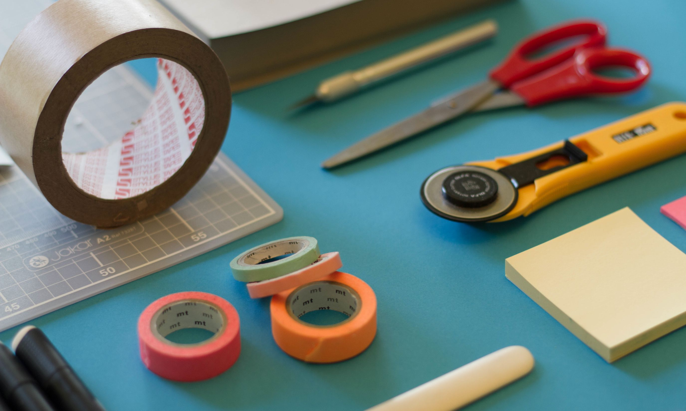
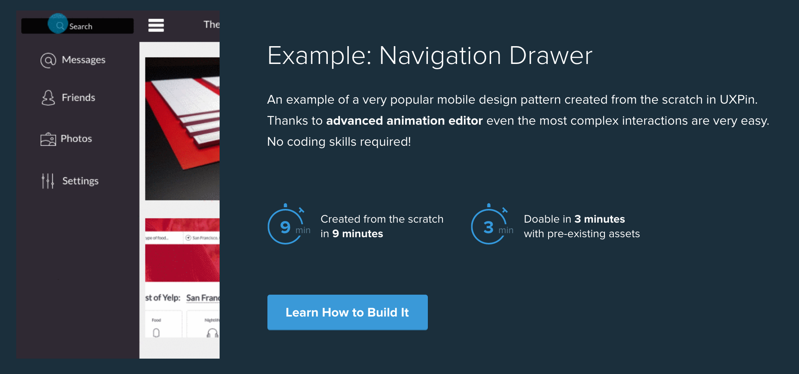
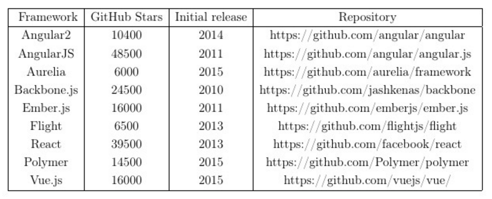

class: center, middle # Webapplikaatiokehyksen käyttö nopeiden prototyyppien kehittämiseen ###Jussi Kaijalainen, Wingmen Oy --- class: middle # Agenda * Tausta ja motivaatio * Prototyypien kehittäminen * Webapplikaatiokehykset * Emberjs demo * Tulevaisuus --- class: center, middle # If a picture is worth 1000 words, a prototype is worth 1000 meetings. ###- Tom & David Kelley, Creative Brothers at IDEO --- background-image: url(wingmen.jpg) --- class: middle # Prototyyppi ## A prototype is an early sample, model, or release of a product built to test a concept or process or to act as a thing to be replicated or learned from. - Wikipedia --- class: center,middle ## Miksi nopeat prototyypit? --- class: center, middle # No business plan survives first contact with a customer. ###- Steve Blank --- class: middle # Prototyyppien tasot --- class: middle # Fyysinen ## Työkalut: paperimallit  --- class: middle # Selattava mockup ## Työkalut: Applikaatiot (UXpin, InVision...)  --- class: middle # Testattava MVP ## Työkalut: Webapplikaatiokehykset (Angular, Ember...) ja CSS-kehykset (Bootstrap, Foundation...) --- class: middle # Entäpä sitten back-end? ## Diplomityössä rajattu pois, mutta käytännössä... --- class: middle # Käytettävyyden testaus eri tasoilla ## Paperi vs. Mockup vs. MVP --- class: middle # Webapplikaatiokehykset & työkalut --- class: middle # Suosituimmat kehykset  --- class: middle # Diplomityössä testissä ## React, Ember ja Angular2 <!--1. Statistiikkaa, valintaperusteet (nopeus & työkalut & valmiit palikat)--> <!--3. Miten arvioitiin--> --- class: middle # Ominaisuudet ## Templating, routing, data-binding, API-kirjasto, testit, työkalut ## Vaikea tehdä eroa --- class: middle # Suurimpina eroina ## Yhteisö, työkalut ja fiilis ## Convention over configuration vs. config over convention --- class: middle # Kehysten lisätyökalut ## Kriittisiä prototypoinnin nopeuden kannalta --- class: middle # CLI ## Projektien luonti, scaffolding, kehityspalvelin, paketointi... --- class: middle # Livereload ## Projektin tiedostojen seuranta ja päivitys reaaliajassa selaimessa --- class: middle # ES6 tuki ## ES6 nopeuttaa ja helpottaa JavaScriptin kirjoittamista linkki: http://es6-features.org/ --- class: middle # JSHint \ ESLint \ JSLint ## Automaattinen virheiden havaitseminen linkki: http://jshint.com/ --- class: middle # SASS ## CSS<sup>2</sup>: muuttujat, nesting, funktiot yms. linkki: http://sass-lang.com/ --- class: middle # Autoprefixer ## Lisää automaattisesti CSS-prefixit haluttuun selainversioon saakka käyttäen http://caniuse.com/ Linkki: https://github.com/postcss/autoprefixer --- class: middle # Selain-lisäosa ## Helpottaa kehitystä näyttämällä erinäistä lisäinfoa applikaation tilasta --- # Ember valittu käyttöön ## Convetion over configuration ## Pitkälle viety CLI ## Aktiivinen yhteisö & ylläpitäjät käyttävät isoissa omissa projekteissaan --- class: middle # Ember demo ## Livedemo Ember-CLI:llä applikaation rakentamisesta https://gist.github.com/fiddler/5b913c907ff71a0c75ef74b80f3c3c8c --- class: middle # Prototyyppien rakentamisen tulevaisuus ## CLI viety pidemmälle ## WYSIWYG koodaus ## Isomorfiset applikaatiot --- class: middle # Kiitos ajastanne! ## Twitter: @wingmenguys ## Kysymyksiä?